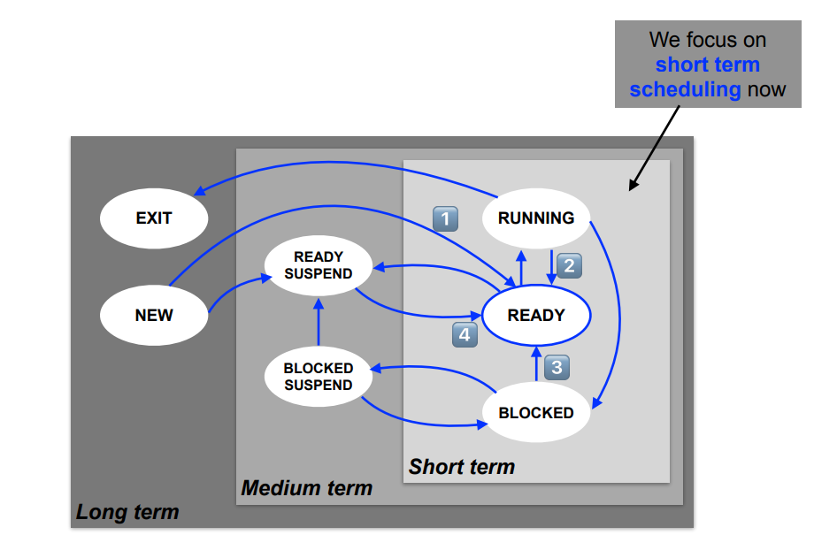

Lecture 12: Uniprocessor scheduling
Exam
Processors and processor time as a resource and its management
Important questions:
- Can you define the terms "dispatching" and "scheduling"?
- Which dispatch states exist, which level of scheduling are they related to?
- Can you describe details of short/medium/long term scheduling?
- Which process state transitions are related to which scheduling level?
- Can you explain preemptive scheduling and its advantages?
- Can you give examples for scheduling strategies, explain how they work?
- Can you determine scheduling orders for a given strategy?
- Can you discuss pros/cons of the different scheduling strategies?
- What is multi-level scheduling and how is this related to priorities?
- Can you give details of scheduling strategies in Unix and Windows?
Processes once again…
- Processes are (still…) the central abstraction for activities in
current operating system
- illusion of independent sequential control flows as a concept (sequence of CPU and I/O bursts)
- in real life, the CPU is multiplexed
- Unix systems provide a set of system calls to create and
manage processes and to provide communication channels
- in addition, modern operating systems also support light and featherweight processes
- Processes are controlled by the operating system
- allocation of resources
- preemption of resources
Dispatch states
Depending on the scheduling level, every process is assigned a logical state representing its dispatch state at a given point in time:
- short-term scheduling (µs – ms)*
- ready, running, blocked
- medium-term scheduling (ms – min)*
- swapped and ready, swapped and blocked
- long-term scheduling (min – hours)*
- created, terminated
*Rule of thumb how often a scheduling decision or state change occurs
Short-term scheduling
- ready to be executed by the CPU
- a process is on the ready (waiting) list for CPU allocation
- its list position depends on the scheduling algorithm
- running: resource "CPU" has been allocated to the process
- a process is computing: "CPU burst"
- there is only one running process per CPU at any given moment in time
- blocked: waiting for an event
- a process performs input or output: "I/O burst"
- it waits for the occurrence of at least one condition
Medium-term scheduling
A process is completely swapped out
- the complete contents of its address space are moved to background storage
- the main memory it used is released
The process has to wait to be swapped in:
- swapped out ready (READY SUSPEND)
- CPU allocation ignores this process
- the process is on a waiting list for memory allocation
- swapped out blocked (BLOCKED SUSPEND)
- the process waits for an event (it is blocked)
- if this event takes place, the process state changes to READY SUSPEND
Long-term scheduling
- Processes are created (NEW) and ready to be started: fork(2)
- a process instance was created and assigned to a program
- the allocation of the resource "memory" might still be outstanding (e.g. when paging in parts of the process address space on demand)
- Processes are terminated (EXIT) and wait for their removal: exit(2)/wait(2)
- the process is terminated, its resources are released
- the "cleanup" after process termination can be performed by a different process (e.g. in Unix)
State transitions

Scheduling points
- Every transition into the READY state updates the CPU waiting queue
- a decision about the queueing of its process control blocks is made
- the result depends on the CPU allocation strategy of the system
- Scheduling and rescheduling takes places…
- after a process is created
- if a process yields control of the CPU
- if the event a process is waiting for takes place
- when a swapped out process is considered for CPU allocation again
- A process can be forced to yield (release) the CPU → preemptive scheduling
- e.g. using a timer interrupt
First-Come First-Served – FCFS
- A simple and fair (?) algorithm: "first come first served"
- Queueing criterion is the arrival time of a process
- Algorithm is non preempting and assumes cooperating processes

- Example:
- the normalized runtime (Tr / Ts) of C is bad in relation to its service time Ts
Discussion: FCFS – "convoi effect"
- This problem affects short running I/O-intensive processes which follow long CPU-intensive processes
- Processes with long CPU bursts benefit from this
- Processes with short CPU bursts are disadvantaged
- FCFS minimizes the number of context switches. However, the convoi effect causes a number of problems:
- large response time
- low I/O throughput
- If the system runs a mix of CPU- and I/O-intensive processes,
FCFS is not a suitable approach
- it is typically only used in batch processing systems
Round Robin (RR)
- Reduces the disadvantage of processes with short CPU bursts: "everyone for themselves!"
- the available processor time is split into time slices
- When a time slice is used up, a process switch can occur
- the interrupted process is moved to the end of the ready list
- the next process is selected from ready list according to FCFS
- Basis for protecting access to the CPU: a timer enforces an interrupt at the end of each time slice
- The efficiency of this approach depends essentially on the chosen length of the time slice
- too long ➛ round robin degenerates to FCFS
- too short ➛ very high overhead for process switches
- Rule of thumb: time slices should be "a bit longer" than the duration of a "typical interaction"
Discussion: RR – performance problems
- I/O-intensive processes terminate their CPU burst before their time slice is used up
- they block and are added back to the ready list when their I/O burst is finished
- CPU-intensive processes, however, use their time slice completely
- they are then preempted and immediately added to the end of the ready list
- The amount of CPU time for processes is thus distributed
inequally ➛ CPU-intensive processes get a larger share
- I/O-intensive processes are not served as well, thus the utilization of I/O devices is low
- the variance of the response time of I/O-intensive processes increases
Virtual Round Robin (VRR)
- Avoids the unequal distribution of CPU times with RR
- processes are added to a preferred list when their I/O burst ends
- this list is considered before the ready list
- Virtual Round Robin uses time slices of different lengths
- processes on the preferred list are only allocated a partial time slice
- they can use the remaining run time they did not use in their previous time slice
- if their CPU burst last longer, they are moved to the ready list
- Scheduling in VRR involves a bit more overhead compared to RR
Shortest process next (SPN)
- Reduces the disadvantage of short CPU bursts with FCFS: "let the shortest come first…"
- this requires knowledge about the process run times
- no preemption
- The main problem here is the prediction of run times
- batch processing: the programmer annotates the required time limit
- interactive procession: time limit estimated based on previous CPU burst lengths of the process
- Response times are reduced significantly and the overall system performance is increased
- However: danger of starvation of CPU-intensive processes
Discussion: SPN – weighting bursts
-
CPU bursts further in the past should be weighted less:
-
values of the constant weighting factor α: 0 < α < 1
-
it represents the relative weighting of
single CPU bursts in the time line of the process
- Recursive solving leads us to...
This statistical approach is also called exponential smoothing.
Shortest Remaining Time First (SRTF)
- Extends SPN with preemption
- thus appropriate for interactive operation
- results in improved runtimes
- The running process is preempted if Texp < Trest
- Texp is the expected CPU burst length of an arriving process
- Trest is the remaining CPU burst length of the running process
- Difference to RR: SRTF is not based on timer interrupts, but nevertheless preemptive
- We have to estimate burst lengths instead
- Like SPN, processes can also starve using SRTF
Highest Response Ratio Next – HRRN
-
Avoids the possible starvation of CPU-intensive processes that can occur with SRTF
- HRRN considers the aging of processes – their waiting time
- HRRN considers the aging of processes – their waiting time
-
w is the "waiting time" the process has accumulated so far
-
s is the "expected service time"
-
HRRN always selects the process with the highest value of R
- Again, this is based on an estimation of the service time
Feedback (FB)
- Short processes obtain an advantage without having to estimate the relative lengths of processes
- Basis is the penalization of long running processes
- Processes are preempted
- Multiple ready lists used according to number of priority levels
- when a process arrives for the first time, it has highest priority
- when its time slice is used up, it is moved to the next lower priority level
- the lowest level works according to RR
- Short processes finish in a relatively short amount of time, but long processes can starve
- It is possible to consider the waiting time to move a process back to a higher priority level (anti-aging)

Discussion: Priorities
- Process priorities significantly influence scheduling decisions
- Static priorities are defined when a process is created
- their value cannot be changed during the execution of the process
- this enforces a deterministic ordering of processes
- Dynamic priorities are updated while a process is running
- the operating system usually updates the priorities, but also the user can be allowed to influence priorities
- SPN, SRTF, HRRN and FB are special cases of this approach
Combination – Multi-level scheduling
- Multiple scheduling strategies can be combined (i.e., used
"simultaneously"), e.g. support of
- interactive and background processing or
- realtime and non-realtime processing
- interactive / real-time critical processes are preferred
- The implementation typically uses multiple ready lists
- every ready lists has its own scheduling strategy
- the lists are typically processed using priority, FCFS or RR
- overall, a very complex approach!
- FB can be seen as a special case of this approach

Objectives for evaluation
- User oriented:
- Run time – time between start and termination of a process including the waiting time(s) → batch processing
- Response time – time between user input and program response → interactive systems
- Tardiness – for the interaction with external physical processes, deadlines have to be adhered to → real-time systems
- Predictability – processes are always processed identically independent of the load → hard real-time systems
- System oriented:
- Throughput – finish as many processes as possible per time unit
- CPU load – keep the CPU busy at all times
- avoid overhead (scheduling decisions, context switches)
- Fairness – no process should be disadavantaged (e.g. by starvation)
- Load balancing – I/O devices should also be utilized uniformly
Quantative comparison

Qualitative comparison

Scheduling in Unix
- Two step preemptive approach
- objective: reduce response times
- No long term scheduling
- high-level: mid term, using swapping
- low-level: short term preemptive, MLFB, dynamic process priorities
prio = cpu_usage + p_nice + base
- Once a second:
- every "tick" (1/10 s) reduces the "usage entitlement" for the CPU by increasing cpu_usage for the running process
- high prio value = low priority!
- The amount of cpu_usage over the time is reduced (smoothed)
- the smoothing function is different in various versions of Uni
UNIX – 4.3 BSD (1)
-
The user priority is determined at every fourth tick (40ms):
-
Pcpu is incremented (by 1) with every tick and is smoothed once
a second:
- Smooting for processes that are woken up and were blocked for
more than 1 second:
UNIX – 4.3 BSD (2)
- Smoothing (using a decay filter):
for an assumed average load of 1: Pcpu := 0.66 · Pcpu + Pnice
- In addition, we assume that a process collects Ti ticks in the time
interval i and Pnice = 0
Pcpu1 = 0.66 T0
Pcpu2 = 0.66 (T1 + 0.66 T0 ) = 0.66 T1 + 0.44 T0
Pcpu3 = 0.66 T2 + 0.44 T1 + 0.30 T0
Pcpu4 = 0.66 T3 + … + 0.20 T0
Pcpu5 = 0.66 T4 + … + 0.13 T0
- After 5 seconds, only 13% of the "old" load are considered
Windows NT – Priority classes
- Preemptive, priority- and time slice-based thread scheduling
- preemption also occurs for threads executing in the kernel → different to Unix
- RR for processes of the same priority: 0 reserved, 1–15 variable, 16-31 real-time
- The thread type (fore-/background thread) determines the time quantum available to the thread → quantum stretching
- quantum (between 6 and 36) is reduced by 3 or 1 with every tick (10 or 15 ms), if the thread changes to the waiting state
- the length of a time slice varies with the process: 20–180 ms
- foreground/background, server or desktop configuration
- In addition, NT has variable priorities:
- process_priority_class + relative_thread_priority + boost
NT – Adaptive priorities
- Thread priorities are dynamically increased when certain conditions are given: dynamic boost
- Completion of input/output (disk): +1
- Mouse movement, keyboard input: +6
- Deblocking, release of resources (semaphore, event, mutex) +1
- Other events (network, pipe, …) +2
- Event in foreground process +2
- Dynamic boosts are decreased again ("used up") with every tick
- Guarantee of progress
- avoids the starvation of threads
- up to 10 "disadvantaged" threads are allocated priority 15 for two time slices every 3–4 seconds
Conclusions
- Operating systems take CPU scheduling decisions on three different levels:
- Long term scheduling: admission of processes to the system
- Medium term scheduling: swapping of processes
- Short term scheduling: short-term CPU allocation
- All algorithms discussed in this lecture are considered short term scheduling approaches:
- there are different user- and system oriented criteria to assess the properties of a CPU scheduling algorithm
- the selection of an approach is difficult and can have unexpected negative effects
- the "best" approach can only be found by an analysis of typical application profiles and all given constraints